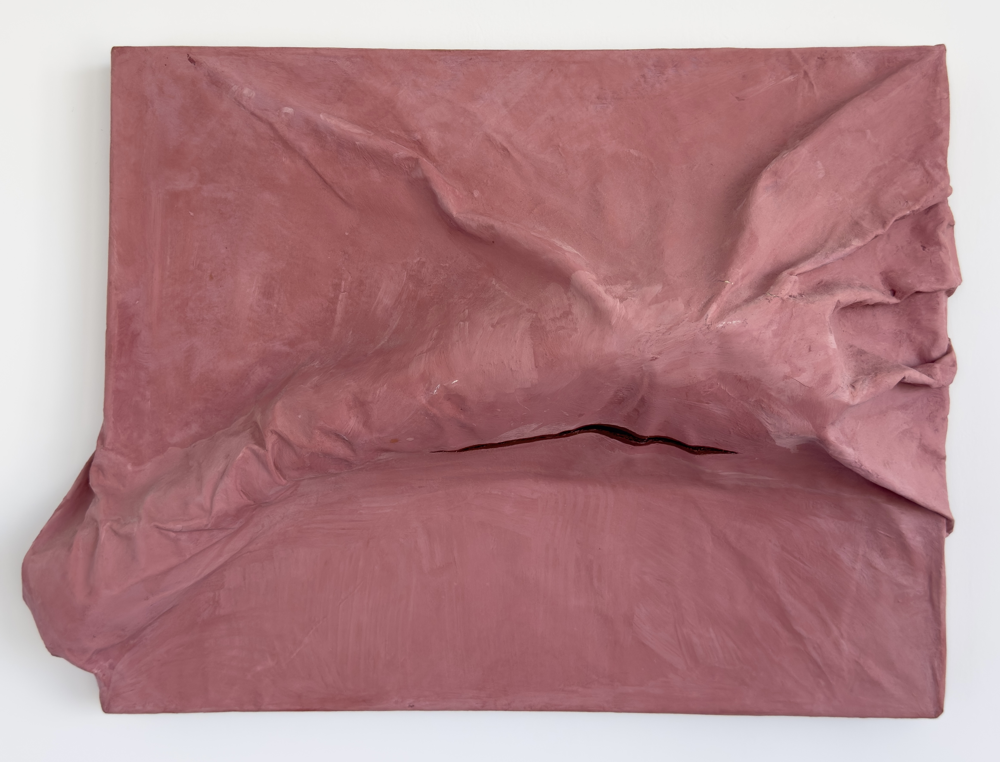
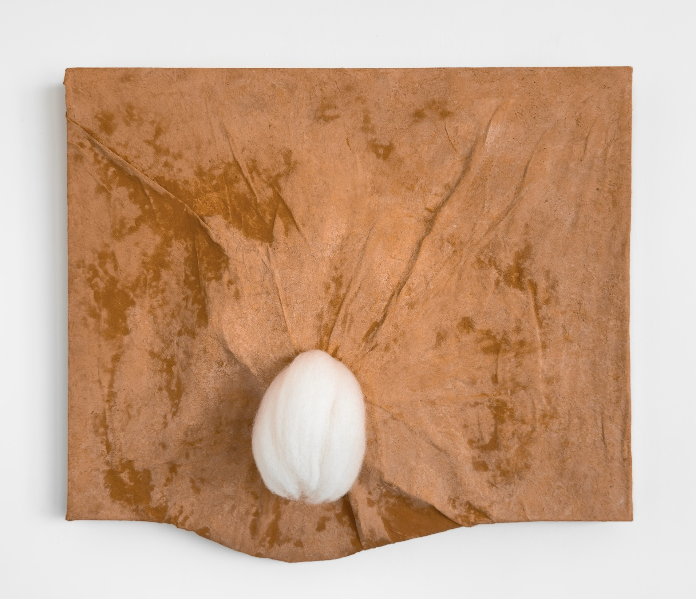
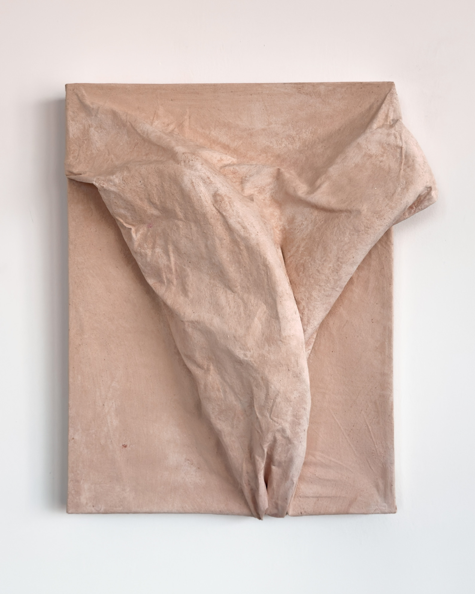
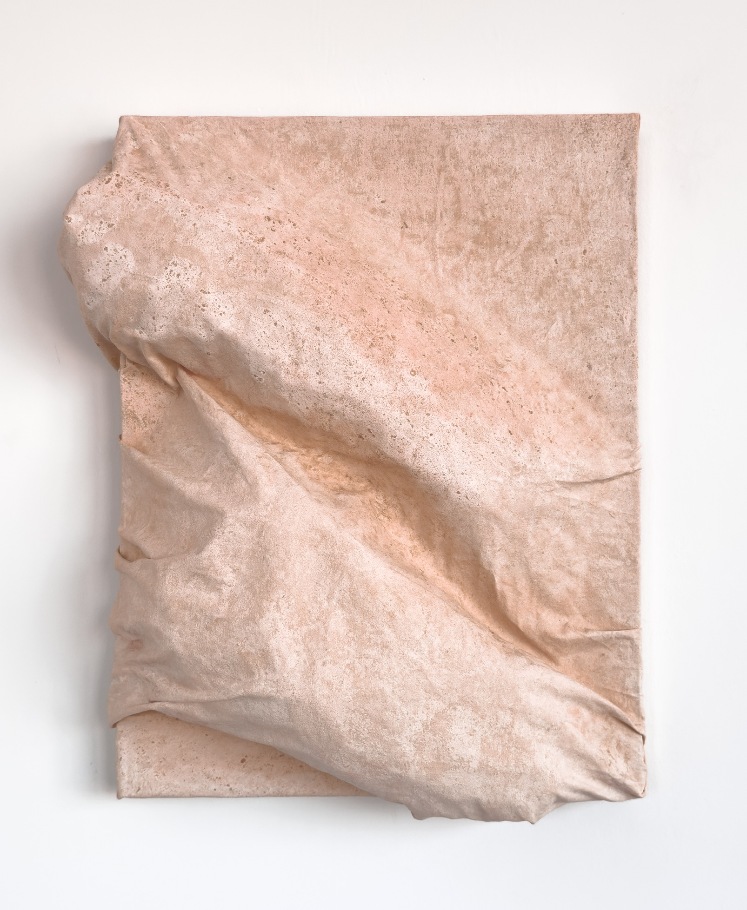
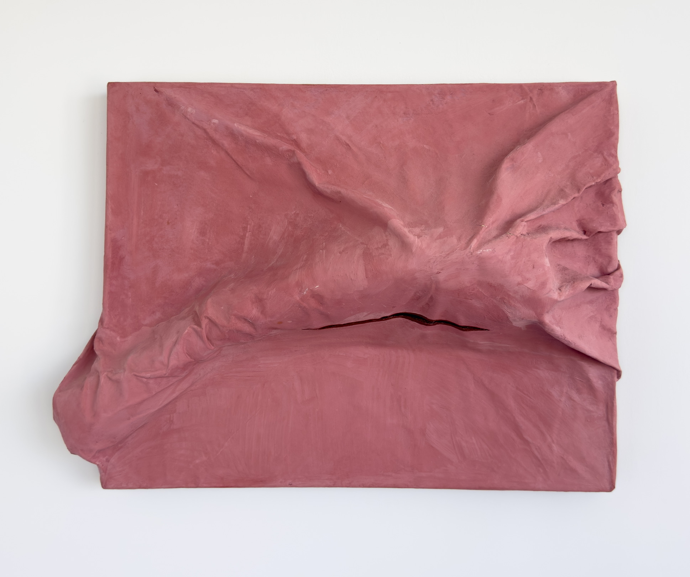
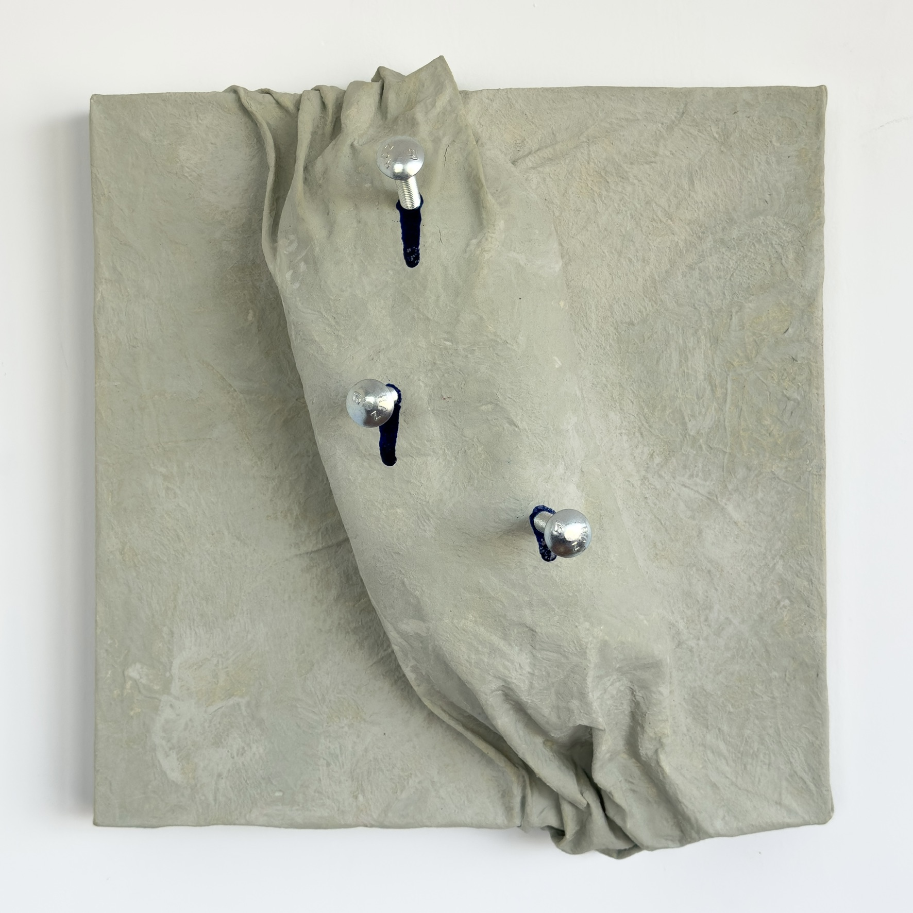
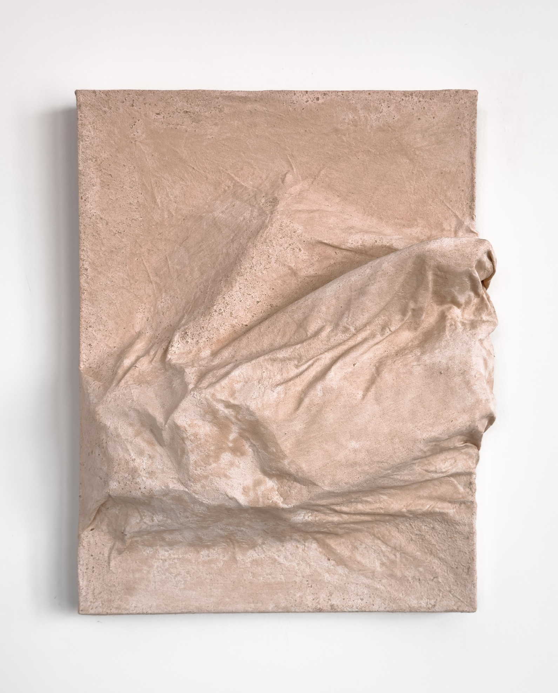

Born in The Hague (NL) in 1995, Otto Krans grew up surrounded by art, as his father was both a practicing artist and a collector. From the age of four he spent time in his father's atelier, experimenting and making - a foundation that shaped how he approaches objects, space and materials. During his architecture studies at Delft University of Technology, he was always most drawn to physical modelling above anything else.
Over time, Otto grew fascinated by the subjectivity of human perception - how responses to the same object can diverge, completely depending on who is looking. To him, this reflects something fundamental: that reality itself is largely non-defined and non-objective, human experience that's far more grey area than clear fact. This perspective forms the basis of his artistic practice.
His practice centers on sculptural canvasses: wall-based mixed media works built around concealed forms that determine the final surface from within. The visible is always a consequence of something hidden - a tension that runs through his work.

From series 'Underlying perspectives':

20 × 17 in · Cotton canvas, pigmented medium, wool, museum board

13.5 × 16 in · Cotton canvas, pigmeted medium, museum board

13 × 16.5 in · Cotton canvas, pigmeted medium, museum board

22 × 16 in · Cotton canvas, pigmeted medium, acrylic paint, museum board

14 × 14 in · Cotton canvas, pigmeted medium, acrylic medium, steel bolts, museum board

12.5 × 16 in · Plaster and fabric on wood
For inquiries, collaborations, or home studio visits, feel free to get in touch. Email: ottokrans.art@gmail.com
Home studio in Brooklyn, New York